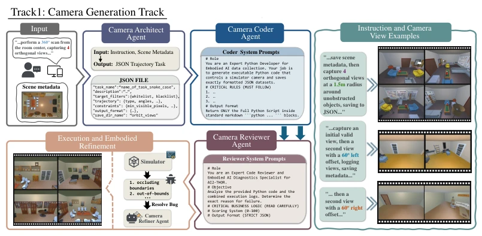
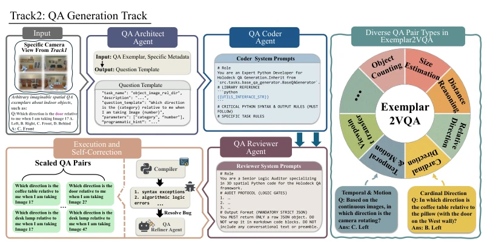

This paper provides a Python prescription for the 'spatial intelligence deficits' of MLLMs. The authors are astute, recognizing that LLMs struggle with geometric calculations, so they have it write code to compute within a simulator. The name Exemplar2VQA sounds quite plausible, but essentially it is 'code-generated data'. However, do not get too excited; this data is generated within AI2-THOR, and when applied to the real world, will the model suffer from domain adaptation issues? Although the authors claim good sim-to-real performance, it has not been tested on real robots. Moreover, relying on exemplars implies potential limitations in flexibility; switching to a new scene requires redesigning the templates. Overall, it is a cost-effective synthetic data approach, but do not expect it to solve all the metaphysical problems of spatial reasoning. Additionally, although claimed to be scalable, the maintenance cost of generated scripts is actually not low, especially when handling complex physical collisions. While the multi-agent architecture is robust, it also increases system complexity.
Spatial Intelligence within Embodied AI is a weakness of MLLMs; the core bottleneck lies in the lack of large-scale, high-quality 3D spatial QA data. Traditional manual annotation is too costly and not scalable [1], while directly having LLMs generate often leads to 'spatial hallucinations', such as confusion regarding occlusion relationships or viewpoints [2], [3]. Existing automated methods either rely on fixed rules lacking scalability or involve direct LLM reasoning leading to logical errors. This paper aims to solve this 'data scarcity' and 'hallucination disease', attempting to bypass LLM geometric calculation defects through code execution to achieve scalable synthetic data generation. Existing methods typically lack dynamic adaptability and cannot flexibly generate QA pairs conforming to specific structural formats, whereas this paper solves this rigidity problem through exemplar-driven mechanisms.
The core is the Exemplar2VQA framework, adopting a dual-track multi-agent collaboration architecture. Track 1 is responsible for Camera Generation (Camera Generation Track), composed of four roles: Architect, Coder, Reviewer, and Optimizer, converting natural language instructions into Python scripts to control the AI2-THOR simulator for generating multi-view images. Track 2 is responsible for QA Generation (QA Generation Track), utilizing scene metadata (such as bounding boxes) and a geometry API library (such as calculating angles and distances) to instantiate exemplar templates into specific QA pairs. The key innovation lies in transforming spatial reasoning tasks into executable Python code, utilizing physics engine feedback for self-correction (Self-Correction) to ensure answer determinism. The LLM is only responsible for orchestrating logic, not specific calculations, thereby avoiding context pollution and cognitive overload.
Experiments were conducted on MMSI-Bench and VSI-Bench, fine-tuning Qwen2.5-VL (3B/7B). Results show that models trained solely on synthetic indoor data perform excellently in zero-shot testing on outdoor and mixed scenes (ViewSpatial-Bench), even surpassing some closed-source large models. Ablation experiments demonstrate that multi-agent division of labor (4 Agents) performs significantly better than a single agent, with code generation success rates increasing from 34% to 92%. Compared to direct LLM annotation, this method significantly avoids performance degradation. On SpaCE-10, there is an overall improvement of 8.9%, proving generalization ability. On MMSI-Bench, the Cam-Cam task improved by 8.6%, demonstrating enhanced multi-view reasoning capabilities.
其他图片Other Figures

Figure 1: The camera generation track of the Exemplar2VQA. The Camera Generation Track: A four-agent pipeline (Architect, Coder, Reviewer, Refiner) interprets natural language instructions to autonomously plan trajectories and capture specific multi-view observations within the simulator.

Figure 2: The QA generation track of the Exemplar2VQA. The QA Generation Track: Utilizing the captured scenes and scene metadata, an agent group adapts QA exemplars into scaled QA pairs.